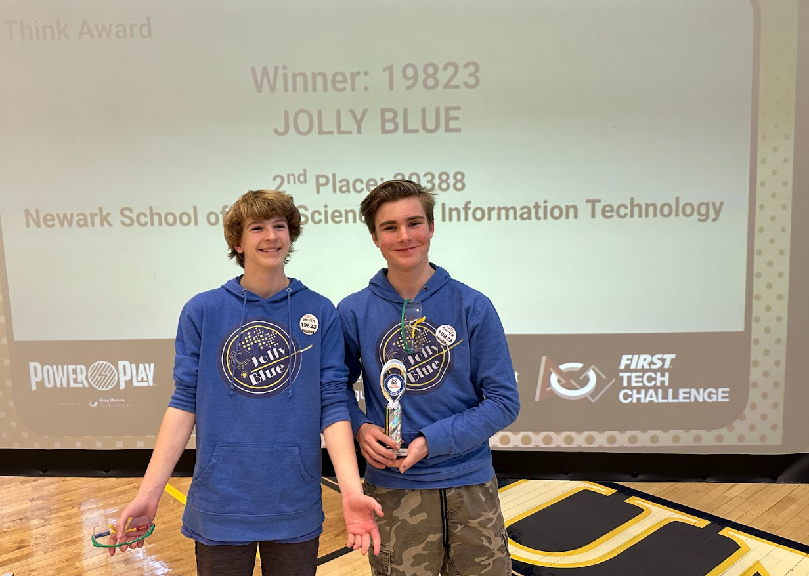
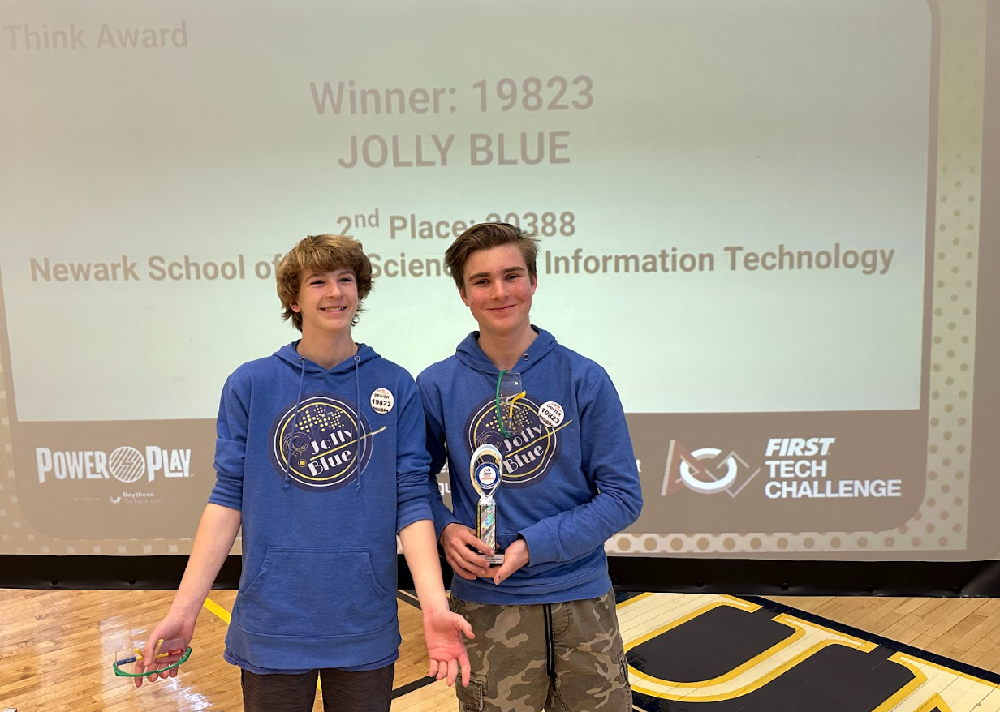

MAKER. ENGINEER. ARTIST.
I love designing and optimizing robots to be at their highest performance potential. My work focuses on control theory, manufacturing, and rapid iterative prototyping while working closely with my competition teams. And when I'm not building new ideas, I'm imagining new worlds through music production and 3D rendering. This is my portfolio.
WHERE I WORK
The Home Lab
This is where the chaos happens. Over the last few years, I’ve transformed my bedroom (and other parts of my house) into a fully functional prototyping facility. It’s a tight squeeze, but I’ve managed to integrate custom-built workbenches and storage for all of my tools alongside a suite of machines including multiple 3D printers, metalworking equipment, soldering stations and oscilloscopes for electronics, and a custom AI computer for running local ML models.
To support my creative endeavors, my computer workstation also doubles as a music production studio with professional monitors and a MIDI keyboard. With some rearranging, my room has even served as a professional photo studio. Every project you see here, whether it’s a high-torque actuator or a new drum and bass track, was born in this room. It is the physical manifestation of my design process.
ACTUATOR DYNAMOMETER
Research Study
While conducting independent research on novel actuators for humanoid robots, I realized I needed a way to validate my control theory. I developed a custom dynamometer test bench to characterize torque-speed curves, thermal performance, and control loop efficiency for any future actuator designs.
Current progress includes the creation of the industrial electrical control system, which integrates a Teensy microcontroller and a 1000-watt industrial AC servo motor housed in a NEMA-rated control box. To join the chassis together, I CNC-machined custom motor and gearbox brackets on my 6040 mill. The video below documents the design and build journey so far.
BATTLEBOTS: ORBITRON
Orbitron
In my freshman year, I jumped from educational robotics to the big leagues, joining the professional BattleBots team Orbitron. I contributed directly to the mechanical design of the V1 chassis and the weapon powertrain, and continue to be a design consultant to the team.
Specific engineering challenges included weight optimization, thermal management for high-power BLDC motors and ESCs, and working with AR500 ballistic steel to create effective counter-weapon geometries.
SWERVE DRIVES & FTC #19823
 

Chapter 1: The Journey
Co-founding FTC Team #19823 "Jolly Blue" with my friend Connor Sherwin, we set out to challenge the conventional wisdom of the competition. We weren't interested in safe, meta-compliant designs. We wanted to build the most innovative, technically advanced machines possible, regardless of the risk.
The defining challenge was our size: we were a two-person team. While other teams had a dozen members to distribute the workload, we had to be efficient. For four years, we dedicated ourselves to the joy of learning through building high-complexity mechanisms. Our love for building new ideas, and the countless things we learned along the way, was worth the sleepless nights required to keep up with the larger teams.
Chapter 2: Swerve R&D
Our philosophy led us to a specific mechanism: the swerve drive. In our rookie year (2021), despite having no mentors and scarce documentation, we attempted to build one. It took seven months, and ultimately, we failed. We lost our state qualifier and didn't advance. But the failure was invaluable: Connor mastered PID loops and loop time optimization, while I learned the hard realities of bevel gear tolerances and CAM paths.
The next year, rather than retreating, we doubled down. We designed an even more ambitious drivetrain: a 3-module differential swerve drive. With the goal of 3D printing the entire assembly, I went through hundreds of prototypes to refine the geometry. All of that iterative optimization culminated in a drive system that was faster and more robust than our previous attempts, but still with room for improvement.


Chapter 3: Final Architecture
The final differential swerve module achieves a significant weight reduction while maintaining full structural rigidity. This research paper details the prototypes and design choices that influenced the final prototype.
↓ DOWNLOAD TECHNICAL PAPER (PDF)VISUAL WORKS
MECHANICAL DESIGN 3D RENDERS
I can't separate my love for aesthetics from engineering. Along with designing functional robots, I strive to visualize the final product in the best light possible. This collection includes high-fidelity renders I've made of my own and others' designs, featuring the official promotional renders for the Orbitron BattleBot.

AUDIO WORKS
MUSIC PRODUCTION
I have been producing music for six years, starting in FL Studio and falling in love with the technical side of EDM. While I produce multiple genres within EDM, making drum and bass is my favorite. I treat audio with the same precision of my engineering projects, and I obsess over mix quality and sound design with the goal of creating the cleanest sonic profile possible. Beyond solo production, I also compete in live music production competitions where we only have 2 hours to create full tracks from scratch. It's invigorating, and production is the ultimate outlet for my creativity. So you can get an idea of what I make, here are 2 tracks I'm proud of and am still iterating on.